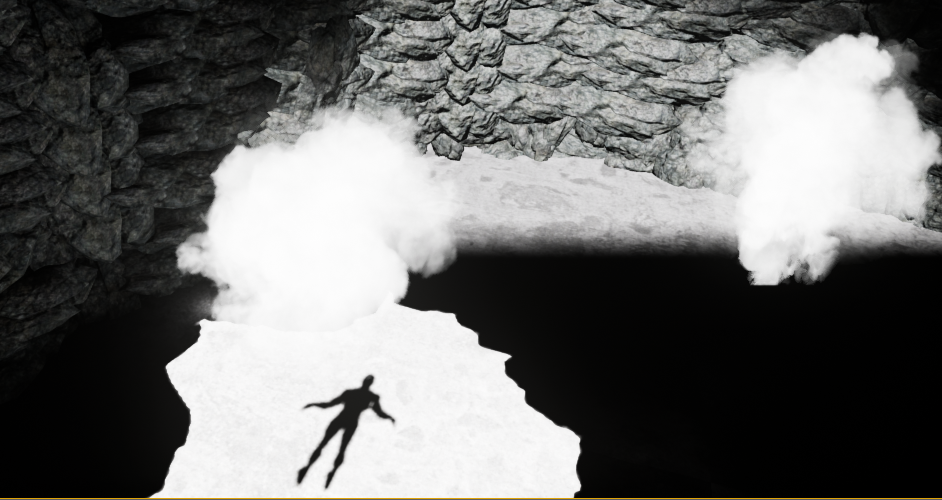
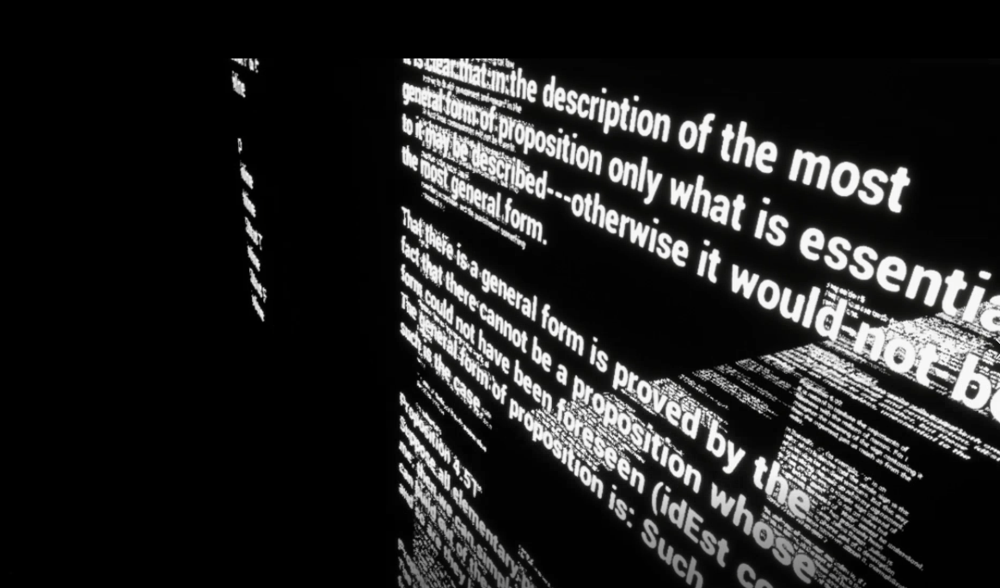
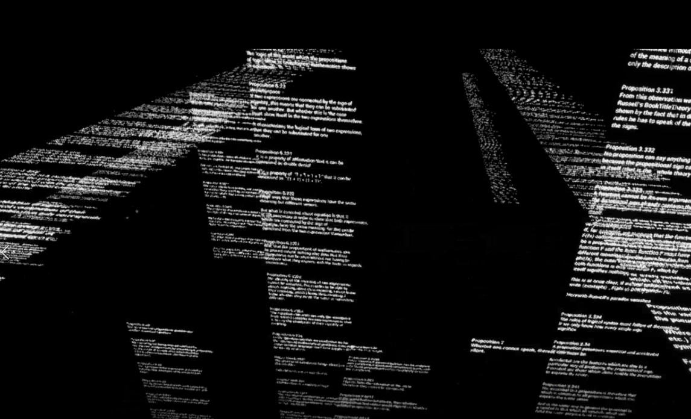
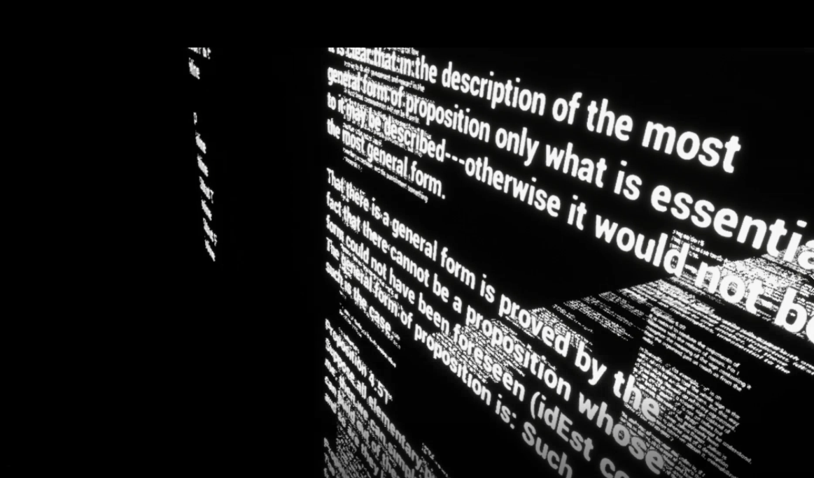
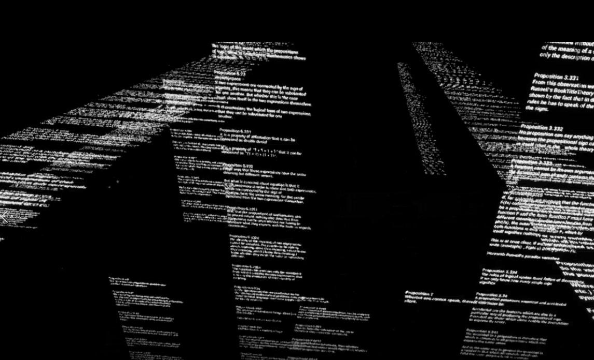
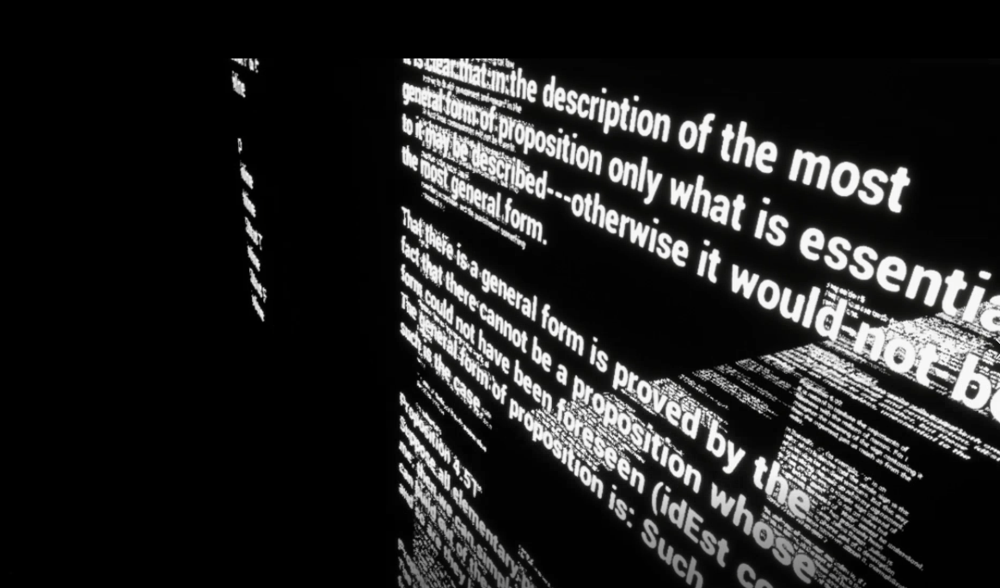
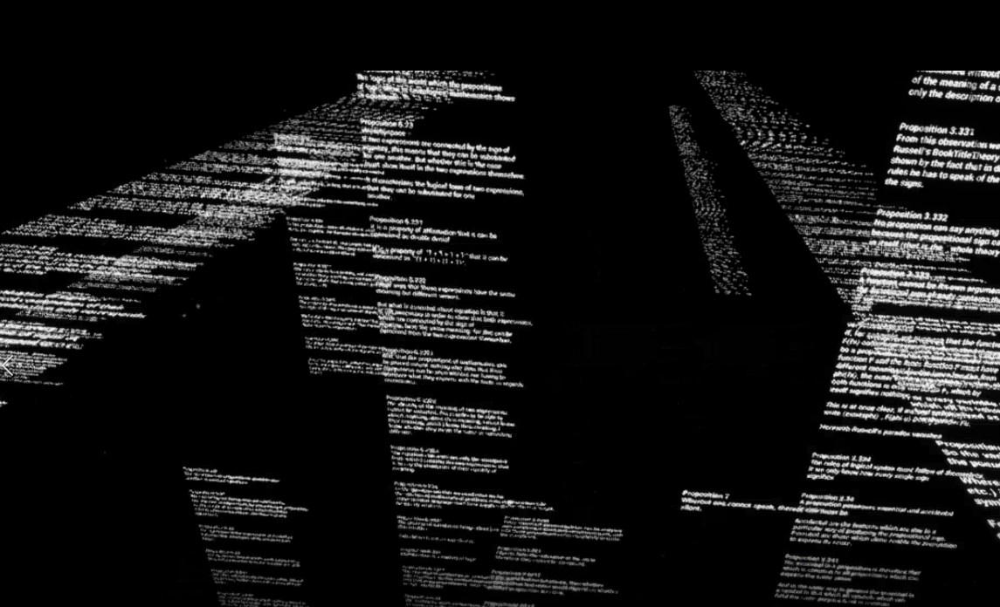

Pharmakon.
[2020]
Pharmakon est une installation immersive et interactive qui propose un
parcours à travers un ensemble d’univers représentant métaphoriquement les
aires cérébrales humaines.
Ce titre reprend une notion grecque ambigüe, à la fois remède et poison,
comme une métaphore de notre rapport à la technique, qui oscille toujours
entre attraction et répulsion.
L’installation est divisée en deux espaces ayant chacun une entrée
séparée.
Un des deux espaces est réservé à la réalité virtuelle, l’autre à la
visualisation sur écran de celle-ci.
Il ne doit pas y avoir de communication entre les deux, l’objectif étant
de déjouer les attentes de la personne immergée face à son environnement
et à son interaction avec celui-ci.
L’environnement de réalité virtuelle a été réalisé sous Unreal Engine
4.20.3 avec le casque de réalité virtuelle Oculus Rift et la caméra Kinect
V.2.
Il s’agit donc d’une modélisation métaphorique du cerveau humain, le
niveau de base permet l’entrée dans une des 4 aires: du langage/raison, de
l’audition, de l’équilibre/proprioception et un méta-niveau de la mémoire
qui n’est accessible qu’une fois avoir fait le tour des 3 premières aires.
Le temps passé à l’intérieur de chaque niveau/aire est prédéfini et réglé
de 30 secondes à 2 minutes pour les besoins de l’installation publique.
A la fin de chaque visite l’immergé revient sur le niveau principal, une
caverne dans laquelle se trouvent 4 fumées illuminées, chacune des fumées
est une entrée vers une aire. Une fois une aire visitée il ne peut plus y
retourner et doit se rendre dans une autre afin de les parcourir toutes.
L’immergé suivant pourra lui à nouveau refaire un parcours mais dans un
tout autre ordre s’il le souhaite.
A la fin du parcours des 3 aires une 4ème est chargée, qui représente une
méta-mémoire. L’immergé arrive dans un espace transparent ou seules des
lignes sont visibles et où il n’y a pas d’interaction possible.
Les 3 autres aires sont :
-L’aire du langage/raison, représentée par du texte qui défile, il s’agit
du Tractacus Logico-philosophicus de L.Wittgenstein, la voix lit un texte
de Saussure.
Les particules répondent à l’intensité de bruit capté par la Kinect dans
l’autre salle.
-L’aire de la proprioception/du mouvement, de l’équilibre joue sur le
sentiment de soi, de son corps au sein de l’environnement virtuel, un
personnage répondant aux mouvementes de la personne reprisse par la Kinect
est « attaché » à la vision de l’immergé, créant ainsi un trouble entre
son corps et celui-ci.
L’environnement est un tunnel tout en miroir dans lequel se trouve des
formes géométriques en rotation sur elles-mêmes et avec lesquelles il est
possible d’entrer en interaction. A la fin du tunnel se trouve une salle
faite des miroirs, l’immergé pense pouvoir s’y voir mais c’est l’avatar de
la personne de l’autre côté qui bouge à sa place.
-L’aire sonore est représentée par une architecture de verre à l’intérieur
de laquelle sont insérées des plaques dorées, que la personne dans la VR
peut sortir déclenchant ainsi un son, que ce soit un enregistrement
musical ou des sons concrets, ce sont tous des sons que j’ai enregistrés
et qui étaient sur mon disque dur, cette architecture est donc en quelque
sorte ma mémoire auditive avec laquelle il est possible de composer. Des
plaques passant en dessous sont gérées par les mouvements des mains de la
personne à côté.
-Le méta-niveau de la mémoire est un niveau contemplatif, l’immergé plonge
vers le paysage du niveau de base qui est ici en wireframe, les mouvements
effectués dans celui-ci sont enregistrés et retranscrits sous forme de
lignes qui tombent avec lui vers le paysage, l’interaction est limitée à
la simple contemplation.
Il peut en effet visualiser ses trajectoires, ses mouvements engendrés
dans le niveau de base qui ont été stockés et réinjectés dans ce
méta-niveau créant un réseau de lignes qui s’entrelacent.
A la fin de l’exposition cette sculpture filaire sera extraite et imprimée
en 3D pour retourner vers la matérialité du geste.
“Pharmakon” interroge ainsi le rapport au corps, à la matérialité dans ce
monde “virtuel”,elle questionne notamment le problème de l’embodiment, de l’incarnation,
et plus généralement des nouveaux rapports perceptifs engendrés par ces
nouveaux dispositifs technologiques.
Mais aussi le rapport au mouvement, au geste comme symbole du processus.
Il s’agit ici de mettre en avant l’ambiguïté du virtuel vis-à-vis de la
question de l’identité.
Le mouvement continu du réel mine la possibilité d’un principe d’identité
diachronique : qui garantit la tenue des essences dans la ligne ingérable
du temps ?
La discrétisation du mouvement essaie de récupérer la diachronie de l’identité mais les ruptures qu’elle présuppose dans la
ligne du temps ont tendance à créer l’effet opposé.
Il y a aussi un jeu sur le rapport entre geste et cartographie qui
ouvre à une interrogation beaucoup plus vaste sur son rapport ambigu avec
l’ouverture impliquée par le mouvement. C’est ce qui nous renvoie à une
« méta-ontologie du virtuel » qui accepte véritablement une multiplicité
originaire et se place dans l’interstice du mouvement pour échapper à tout
systématisme.
Pour se libérer, il faut rester dans le geste, continuer la navigation.
Photos:
-1-
-2-
-3-
-4-
-5-
-6-
-7-
-8-
-9-
-10-
-11-
-12-
-13-
-14-





 


